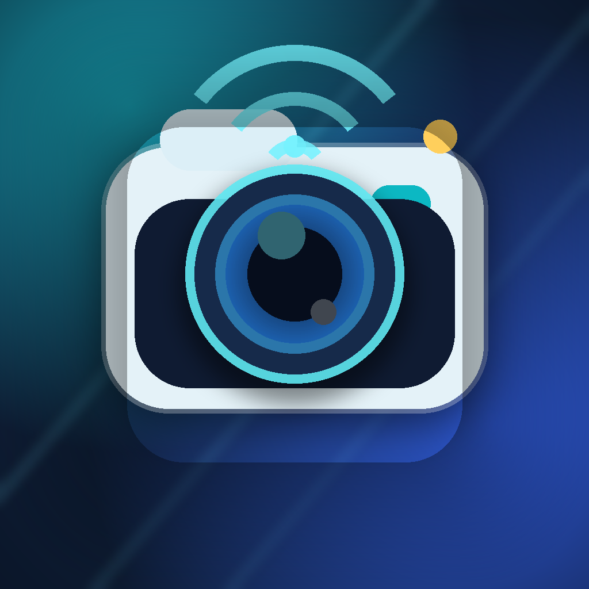

CamIP2026
Turn your iPhone into a private wireless IP camera for real-time local-network viewing, snapshots, and OpenCV workflows.
What It Does
- Streams MJPEG video over HTTP on your local network.
- Provides snapshot capture and a browser control page.
- Supports front/rear camera switching and multiple resolutions.
- Works with browsers, scripts, Python, and OpenCV.
Local First
CamIP2026 does not require an account or a developer-operated cloud service. Your device serves the stream directly to clients on the same trusted network.